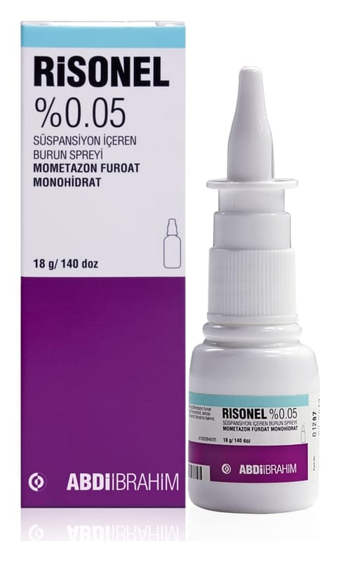

Risonel %0,05 Süspansiyon İçeren Burun Spreyi, 9 g

Ne için kullanılır
KT · Bölüm 1RİSONEL %0.05 Süspansiyon İçeren Burun Spreyi kortikosteroidler adı verilen bir ilaç grubuna dahil olan mometazon furoat içerir. Mometazon furoat bazı sporcular tarafından hatalı kullanılan ve tabletler veya enjeksiyonlarla alınan "anabolik steroidler" ile karıştırılmamalıdır. Mometazon furoatın küçük miktarları burun içine püskürtüldüğü zaman, burundaki iltihabı, kaşıntıyı, tıkanıklığı ve hapşırığı giderm eye yardımcı olur.
RİSONEL 6 yaş ve üzeri çocuklarda ve erişkinlerde saman nezlesi (mevsimsel alerjik rinit olarak da bilinir) ve yıl boyu devam eden rinit (burun iltihabı) semptomlarının (belirtilerinin) tedavisinde kullanılır.
RİSONEL, erişkinler ve 12 yaş ve üzerindeki ergenlerde mevsimsel alerjik rinitin profilaksisinde (önlenmesinde) endikedir.
RİSONEL, 2-6 yaş arasında alerjik rinit tanısı almış olan çocuklarda kullanılabilir.
Profilaktik tedaviye polen mevsiminin beklenen başlangıcından 2-4 hafta önce başlanmalıdır.
RİSONEL 18 yaş ve üzeri erişkinlerde nazal polip (iyi huylu ur) tedavisinde de kullanılır.
RİSONEL,erişkinlerde kronik rinosinüzit tedavisinde ve 12 yaş ve üzeri çocuklarda ve erişkinlerde akut rinosinüzitte (bakterilerin eşlik ettiği rinosinüzitte antibiyotiğe ek olarak) kullanılır.
Saman nezlesi ve yıl boyu devam eden rinit nedir? Yılın belirli dönemlerinde ortaya çıkan saman nezlesi ağaç, çimen, ot polenleri ve ayrıca küf ve mantar sporlarının solunmasından kaynaklanan alerjik bir reaksiyondur.
Yıl boyu devam eden rinit, ev tozu akarları, hayvan tüyü kepeği, kuş tüyü ve belirli gıdalar dahil çeşitli maddelere karşı duyarlılıktan kaynaklanabilir. Bu alerjiler burun akıntısı ve hapşırığa neden olur ve burun mukozasında şişliğe bağlı olarak burunda tıkanıklık hissine yol açar. RİSONEL burundaki şişliği v e tahrişi azaltır ve böylelikle, hapşırık, burun kaşıntısı, akıntısı ve tıkanıklığını giderir.
Rinosinüzit nedir? Rinosinüzit; burun tıkanıklığı, akıntı, yüzde ağrı gibi şikayetlerle seyreden, burun ve paranazal sinüslerin inflamasyonudur.
Burun polipleri nedir? Burun polipleri burun mukozasının üzerindeki küçük oluşuml ardır ve genellikle her iki burun deliğinde görülürler. Ana belirti burunda tıkanıklık hissidir ve burundan nefes almayı etkileyebilir. Genize akıntı olarak hissedilen burun akıntısı ve tat ve koku duyumu kaybı da görülebilir. RİSONEL burundaki iltihabı azaltır ve poliplerin kademeli olarak küçülmesini sağlar.